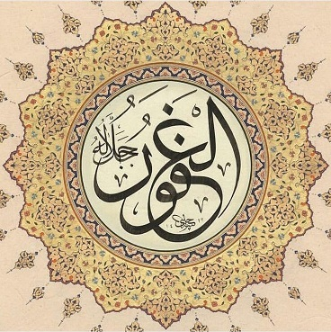

Mağfiret el-Gafûr, Teşekkür ise eş-Şekûr isimlerinin tecellisidir. İlki hataları bütünüyle silmek, ikincisi iyilikleri takdir etmek anlamında. Benzer kelimeler olan Mağfiret ile Affetmek, Teşekkür ile Hamd aynı şeyler değil. Hamd Allah'ın olduğu gibi Mağfiret de ancak O'nun.
İki anlamda "Mağfiret ancak Allah’a ait" diyoruz:
* Günahları bağışlayacak başka kimse yoktur. Ancak Allah dilerse bağışlar, dilerse şefaat yetkisi verir. Son söz O'nundur.
* İnsan affedebilir ama asla mağfiret edemez. Başkalarının bize karşı hataları, biz unutmadıkça bir burukluk bırakır içimizde.
3:135
vemen yagfiruz-zunûbe illallâh
Günahları Allah'tan başka kim silebilir?
İlim sıfatlarıyla ilgili üç güzel isim görmüşük: ‘âlim -- bilen ‘alîm -- en iyi bilen ‘allâm -- herşeyi bilen Bunun gibi, mağfiretle ilgili üç isim var: gâfir -- hataları silen gafûr -- hataları çokça silen gaffâr -- bütün hataları silen Bu isimlerin ilki sadece bir âyette geçiyor ve Esmâ listelerinde yok: 40:3 gâfiriż-żenbi veqâbilit-tevbi ... günahı bağışlayan, tevbeyi kabul eden İkincisi aşağıda, diğeri sonraki güne kaldı.
...aynı kökten geldikleri için eş anlamlı gibi görünen gāfir, gafûr, gaffâr isimleri Kur’an’da geçmekte, son ikisi doksan dokuz isim hadisinin listesinde de yer almaktadır. Ancak gāfir bağışlayıcılık vasfının sadece mevcudiyetini gösterirken mübalağa sîgaları olan iki isimden gafûr “birden fazla günahı bağışlayan”, gaffâr ise “sürekli bağışlayıcı olan” mânasına gelir.
Kaynak: İslam Ansiklopedisi

Bu iki ismin yan yana geçtiği üç âyet:
35:30
35:34
42:23
innallâhe ġafûrun şekûr
Allah çok bağışlayıcıdır, iyilikleri fazlasıyla ödüllendirir